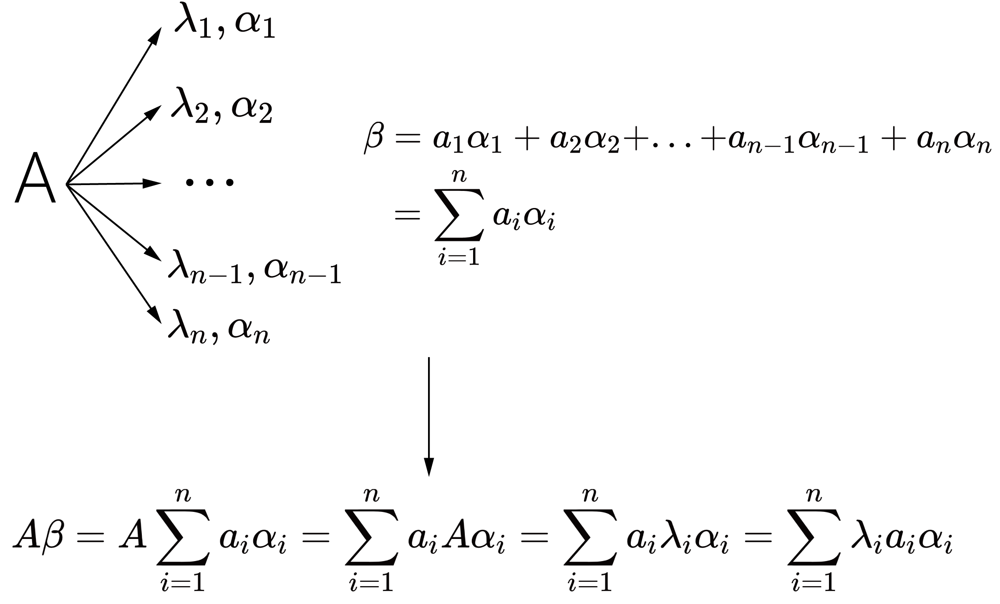

特征值与特征向量的概念最早由英国数学家凯莱（Arthur Cayley）于1858年提出。凯莱首次引入了“矩阵”这一概念， 并定义了特征值和特征向量，这些概念后来成为了现代线性代数的基础部分。特征值和特征向量为理解和描述线性变换提供了一种强有力的工具。 它们揭示了矩阵或线性变换的本质属性，在物理学、工程学、计算机科学等众多领域中都有着广泛的应用。
设A
是数域P上的线性空间V的一个线性变换，若对数域P中的一个数存在一个非零向量
ξ
使得
A
ξ=λξ
那么
λ
称为线性变换
A
的一个特征值
ξ
称为
A
的属于特征值
λ
的一个特征向量
在有限维线性空间中，选定一组基后，线性变换就能够通过矩阵表示，即上式可写为
Aξ=λξ
其中A为线性变换在选定一组基后对应的矩阵，满足条件的λ，ξ也称为矩阵A的特征值和特征向量
我们知道，用一个矩阵乘一个向量，得到的结果仍是向量，也就是说，矩阵将一个向量以某种映射方式映射为另一个向量。你可以将矩阵想象为一个以向量为自变量函数，并且该函数的值也是一个向量（读者可以顺着这个思路思考为什么一般的矩阵不满足乘法交换律）。 下面以二维矩阵为例，读者可以尝试更改向量与矩阵的值来感受这种映射（变换）
播放动画，不难理解矩阵实际上是对向量进行了某个方向上的“拉伸”。而特征值和特征向量反应的正是矩阵对向量拉伸的大小和方向这一特征。
虽然我们一级知道矩阵对向量的本质作用，但直接观察仍然很难得出拉伸的方向和大小，若能够知道矩阵具体的作用方式，那么就可以很大程度上简化计算，而这可以通过特征值和特征向量来实现。
根据特征值与特征向量的定义可以得出，特征向量是对应矩阵作用下沿着自身方向“拉伸”λ倍的“特殊向量”。换言之，若α为A的特征向量，那么α'与α共线，且α'的模长为α的λ倍。因此，若能够求出矩阵的所有特征值与对应的特征向量，那么就可以知道矩阵对任意一个向量的变换，这便是特征值与特征向量所反映的矩阵的特征。读者可以利用下面的流程图及交互窗口加深理解。
图1.通过特征值与特征向量实现矩阵变换示意图
以上分析是基于矩阵对与给定的目标向量的作用进行的，事实上，当我们回到线性变换时，会发现改变的其实并不是向量，而是向量的坐标，这意味着我们可以将矩阵理解为一种对向量的基的变换（事实上矩阵的乘法就是由此而来的）。在上述的分析中，我们采用的是坐标系的标准正交基来表示向量，但如果我们采用特征向量作为基底来表示向量，会发现矩阵的作用实际上就是将每个坐标乘上对应的特征值（根据示意图，β以特征向量为基向量的坐标是a1,a2,...,矩阵作用后的坐标是λ1a1,λ2a2,...），因此特征值与特征向量还给出了能够表示线性变换的简洁方法。
特征值与特征向量反映了矩阵的作用特征，其中特征向量反应了“拉伸”的方向，λ反应了“拉伸程度”的大小，显然一个方向上的“拉伸程度”只能有一个，但同一个方向的特征向量可以有无穷多个，不同方向的特征向量也可以“拉伸”相同的“倍数”
1.设
为矩阵A的一个特征向量α的的两个特征值，则有
则
而
,于是
。即一个特征向量只能对应一个特征值
2.设λ为矩阵A的一个特征值，对应的一个特征向量为α，则
对于任意非零常数k，有
即α的任意非零常数倍仍为λ对应的特征向量
若线性相关，那么存在一个特征向量可以由其他特征向量线性表出，这意味着在其他特征向量的方向上的“拉伸”将影响在该特征向量方向上的“拉伸”，那么拉伸倍数将不再是对应的特征值，换言之，该方向的“拉伸”已经被其他方向“拉伸”的确定了。因此各特征向量因保持线性无关
采用数学归纳法证明
设矩阵A有n个不同的特征值，显然属于一个特征值的特征向量线性无关，设属于k个
不同特征值的特征向量线性无关（k<n），
为属于第i个特征值
的特征向量,
则等式
成立当且仅当
对于属于k+1个不同特征值的特征向量，考虑式
|
(1) |
该式等号两边同乘
与A，得
两式相减得
由假设知该式成立当且仅当
又
,因此
此时（1）式成立当且仅当
，从而属于不同特征值的特征向量线性无关
矩阵A的n次幂等同于矩阵A重复作用n次，即沿相同方向和大小“拉伸”同一个向量n次，因此矩阵A的n次幂每次“拉伸”的方向与A相同，“拉伸程度”为A的n次方，即特征值为A的n次幂
设λ为矩阵A的一个特征值，对应的一个特征向量为α，n为任意正整数，则
即
为
的特征值
矩阵A的逆相当于将向量沿相同方向“缩小”相同倍数（向后对向量乘矩阵和矩阵的逆向量不变），因此特征值为原矩阵的倒数
设λ为矩阵A的一个特征值，对应的一个特征向量为α，则
等号两边同时左乘矩阵A的逆，得
从而
，即
为
的特征值